Anchor Extension:

When determining the nodes of the network, the anchor
extension parameter extends span of the interaction anchors in order
to add flexibility when grouping anchors into nodes where the
interactions between the anchors will form the edges. The extension
parameter is used only to merge locations. Regions for nodes are
based on the minimum and maximum locations of the anchors defining
the node.
Min PET:
To look only at strongly connected networks, the min PET
parameter allows for filtering the edges such that only edges with at
least this many PETs will be shown. The PET count for the network is
defined as the sum of all the PETs from the interactions forming the
edge in the network.
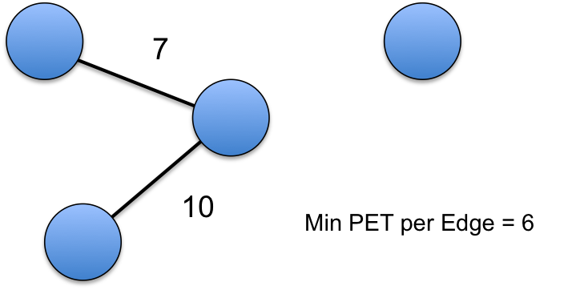
In the above example, since the min PET parameter is set to
6, the edge with only 5 for its PET count is removed.
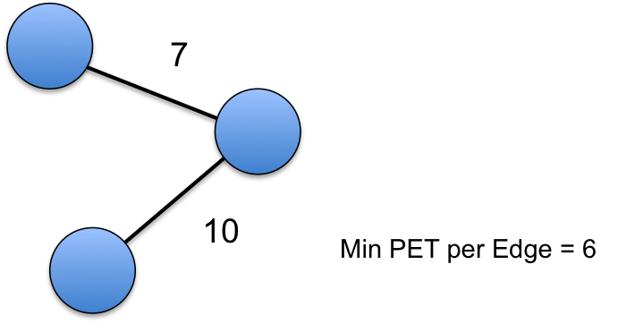
Finally if a node is left without any edges, it is remove
from the network.
Max Intra-Chromosome Distance/Min PET Exceeding
Intra-Chromosome Distance:
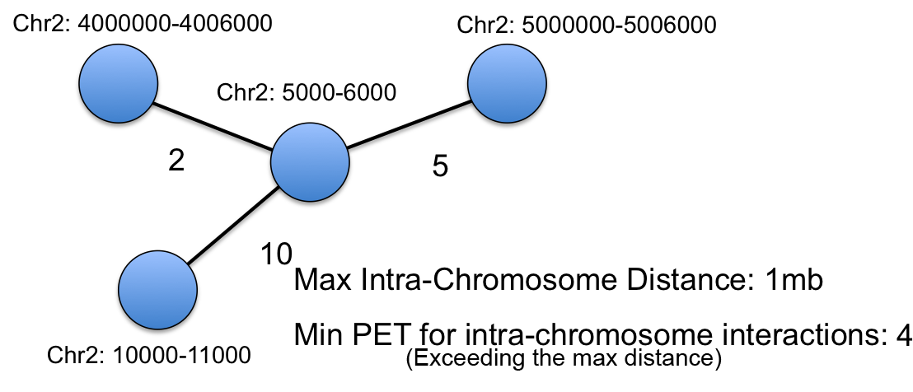
For interactions occuring on the same chromosome,
interactions with very long distances between them may be unlikely.
To account for this, the max-intra-chromsome distance parameter
allows for setting a maximum distance for edges to consider. For
flexibility, the Min PET Exceeding Intra-Chromosome Distance
parameter allows for keeping some of these long distant interactions
if there is a high enough PET count.
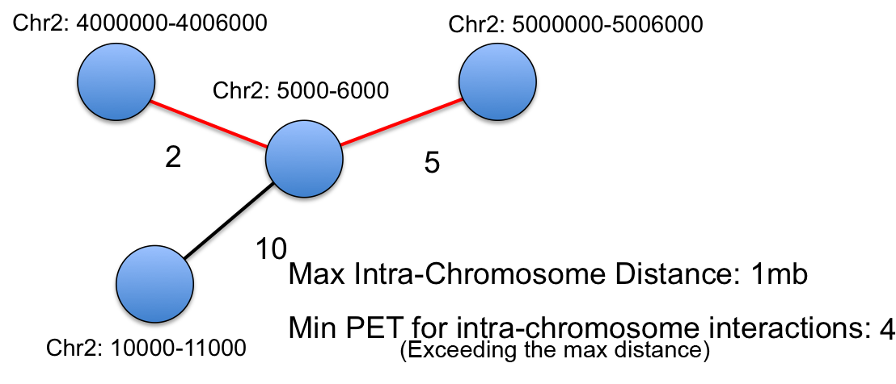
Considering the above example, there are two long distant interactions defined as edges.
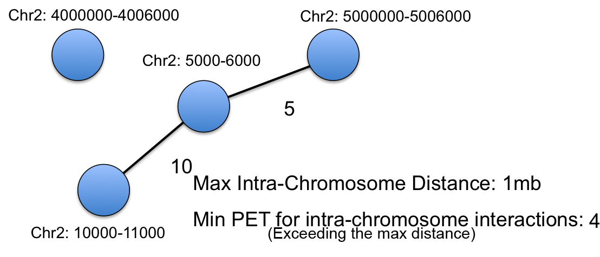
Only the edge with the PET above the threshold provided is kept in the network.
Min PET For Inter-chromosome Edges:
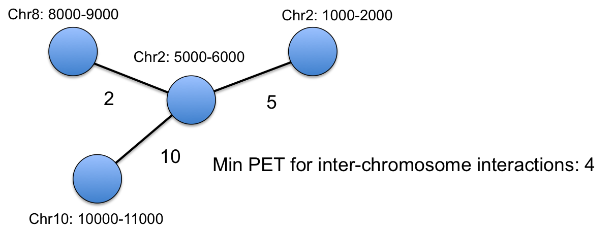
Although inter-chromsome occur, they can be unlikely
occurrences. To take these interactions into account the min PET for
inter-chromosome edges parameter filters edges, leaving only
inter-chromosome edges above the PET threshold.
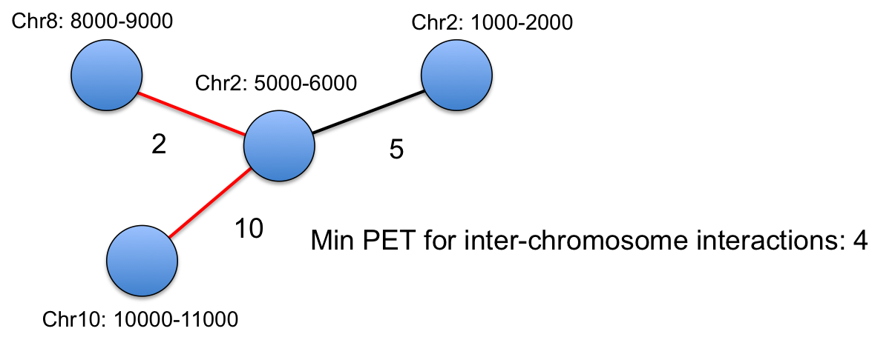
In the above example, two inter-chromosome edges exist in
the component.
Only the inter-chromsome edge with a high enough PET count
remains as an edge in the network.
Minimum Component Size/Min PET Below Component Size:
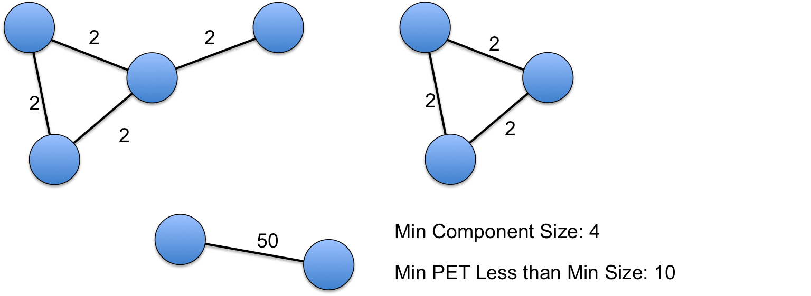
The minimum component size parameter allows for filtering
components such that only components with at least the specified
number of nodes are provided. Setting this number to a high value
allows for only considering highly connected networks. The Min PET
below component size parameter adds flexibility in that it allows for
keeping components that have an edge with a high PET count.
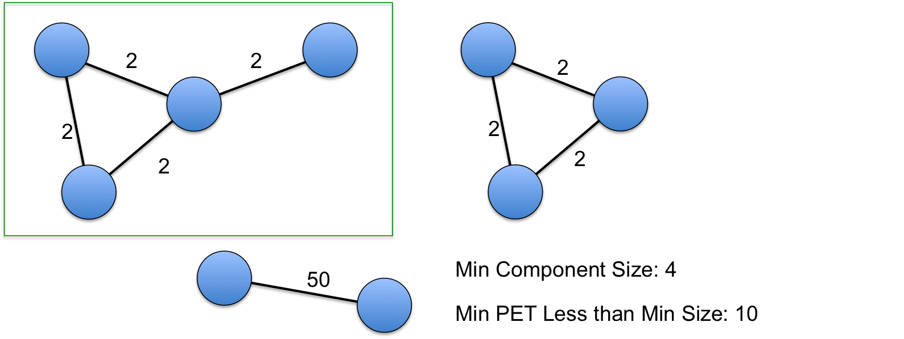
In the above example, the first component will be in the
network because the number of nodes satisfies the min-size parameter.
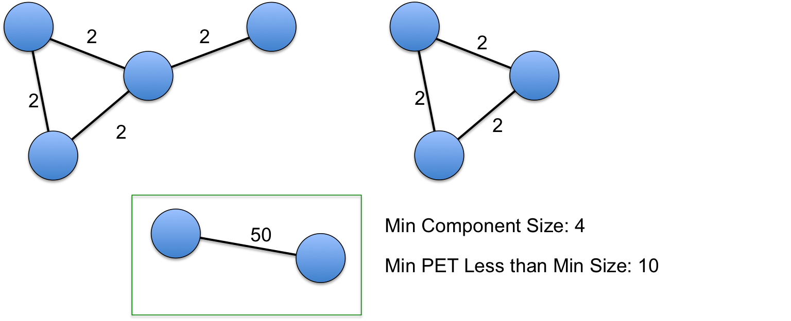
The third component will also be in the network because
although it doesn't have the sufficient number of nodes, it has an
interaction with a high enough PET count.
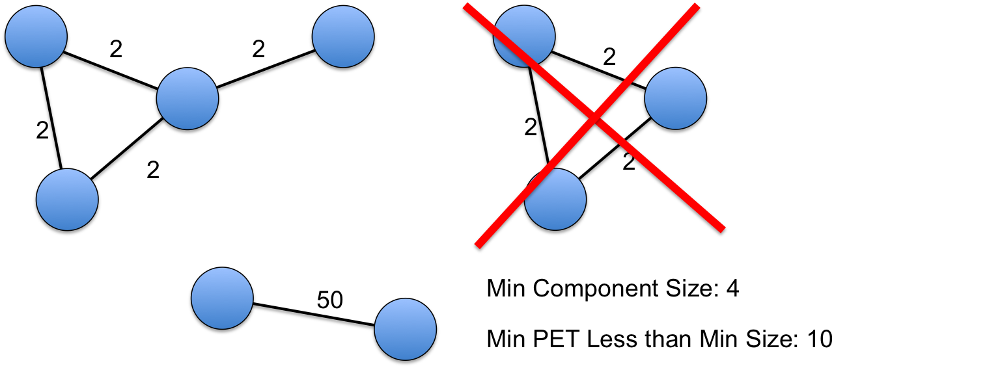
This leaves the second component as not being in the
network because it fails to satisfy either criteria